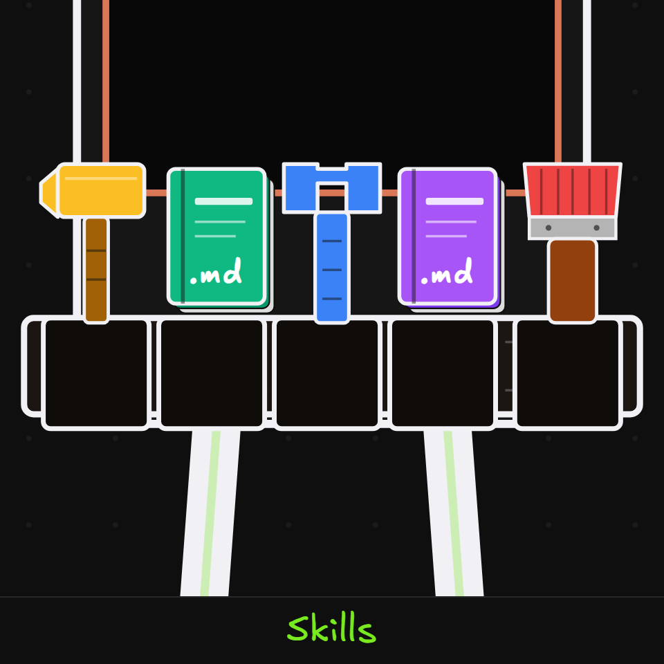
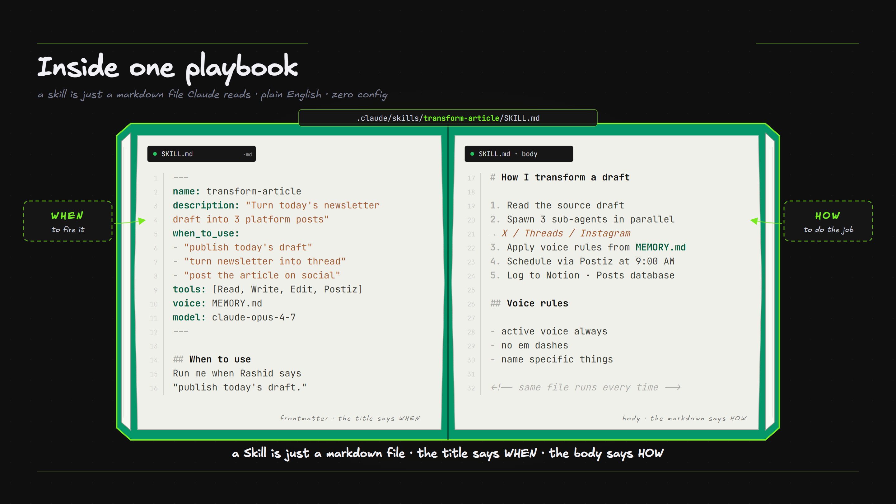
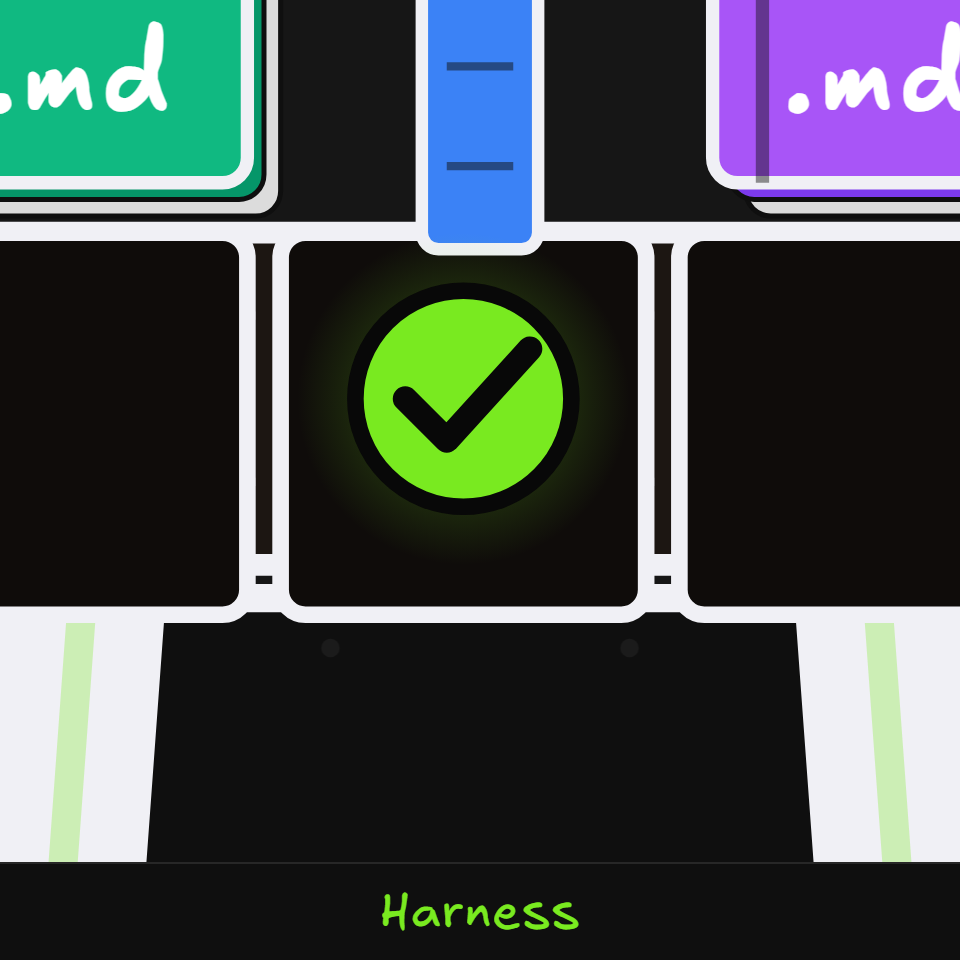

A skill is a job you've taught your AI Employee to do the same way every time, like draft a follow-up, write a proposal, or prep for a call. It's the single most useful thing you'll build, and it's just a text file.

What it is. A skill is a plain text file called SKILL.md with two parts. The first is a short bit of setup at the top, a name (which becomes its /command) and a description (which tells Claude when to reach for it). The second is your instructions for the job. The title says when to use it, the body says how to do it.

Why you use it. Instead of re-explaining the job every time, you say one phrase and it runs your exact process. You just built something most people think needs a developer.
What it is. There are two ways. The first is auto-loaded, where Claude notices your request matches a skill's description and loads it on its own. The second is direct, where you type its /command. A skill and a slash command are the same thing. The folder name .claude/skills/follow-up/ becomes /follow-up.
Why you use it. Whatever you type after the command fills in the blank, so you can fire the same job with the details that matter today.
/follow-up
It has to stop and ask "who? about what?" before it can start.
/follow-up John about the proposal
It starts immediately, because you handed it the details up front.
A handful of built-ins ship with Claude Code and are worth knowing.
What it is. Here's a worked example, a /follow-up skill that writes client emails in your voice. It grows in three stages, and each stage is already useful on its own.
/follow-up command.Why you use it. You can start in five minutes with Stage 1, then layer on voice and workflows as you learn what it gets wrong. The skill gets better while you use it.
Create a skill called follow-up that drafts a follow-up email from my call notes, in my voice. Ask me for a few tone examples first.
Or just say: "create a skill that…"
What it is. Your first version rarely nails it, and that's expected. The loop is simple. You run it, look at what's off, fix it, then run it again. If the tone is wrong, add a voice example. If it's too generic, add a real sample. Three to five rounds is normal. You're training an employee, not writing code.
"Hi John, thank you for your time today. I wanted to follow up regarding our conversation…"
Correct, but it could be from anyone.
"John, great talking through the rollout. Next step, I'll send the draft by Thursday."
Same /follow-up, now it sounds like you.
Beyond the name and description, the setup at the top of SKILL.md can pin a few things.
Keep one shared skill plus a small reference file per client (their data, their branding). Same process, different details, so you're never rebuilding the job for each new account.

What it is. A new skill usually works, until one day the output wanders or it quietly forgets one of its own rules. The fix isn't to nag it with more instructions. It's a harness, an automatic check that runs every single time the skill does its job and catches the slip before it ever reaches you. Think of it as the belt that straps everything in.
Why it matters. Reliability. This is the part that turns a helpful skill into a dependable employee. You stop re-reading every draft, because the harness catches the drift for you, so you can trust the output without checking it yourself every time.
There are two kinds of checks, and Claude builds whichever one fits.
The principle is simple. Don't instruct a skill to remember a rule, enforce it with a check, so doing it right is automatic instead of hopeful. The check itself usually runs on a hook, which you'll meet in the next module.
Harden my follow-up skill so it never goes off-brand. Add an automatic check that runs on every draft and flags anything that breaks my voice rules.
Or just say: "harden this skill"